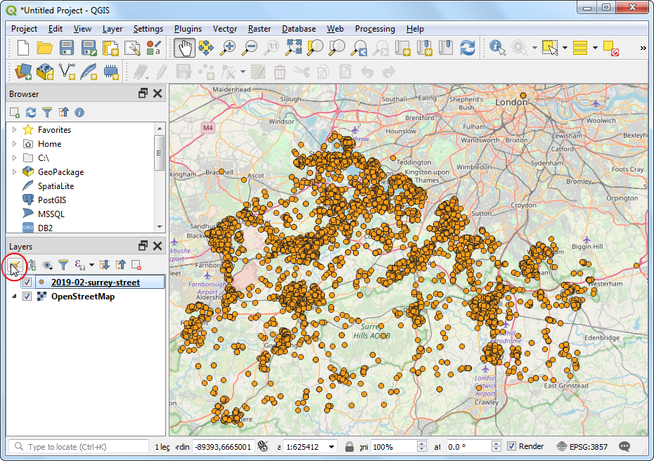

Ujaval Gandhi
Ujaval GandhiHeatmaps erstellen (QGIS3)¶
Heatmaps gehören zu den besten Visualisierungshilfen für dichte Punktdaten. Eine Heatmap ist ein Interpolationsverfahren, das die Dichte der Eingabedaten ermitteln kann. Es wird z.B. zur Visualisierung von Kriminalitätsdaten, Verkehrsunfällen und Einbrüchen eingesetzt. In QGIS ist eine Darstellungsfunktion für Heatmaps enthalten. Außerdem kann der Prozessierungsalgorithmus Heatmap (Kerndichtenschätzung) zur Erstellung von Rasterdaten aus Punktdaten verwendet werden.
Überblick über die Aufgabe¶
Wir werden mit einem Datensatz der Grafschaft Surrey in England arbeiten und eine Heatmap der Kriminalitätsdichte erstellen.
Weitere Fähigkeiten, die wir erlernen¶
Benutzung von virtuellen Felden und bedingten Ausdrücken
Beschaffung der Daten¶
data.police.uk liefert Daten zu Straßenkriminalität und Durchsuchungen in einem einfachen csv-Format. Wir laden die Daten unter Surrey Police herunter und entpacken die enthaltene csv-Datei.
Der Einfachheit halber kannst du eine Kopie des Datensatzes unter folgendem link herunterladen:
Datenquelle [POLICEUK]
Arbeitsablauf¶
We will first load a basemap layer from OpenStreetMap and then import the CSV data. In the Browser tab, scroll down and locate the XYZ Tiles section.

Expand it to see the OpenStreetMap tile layer. Drag and drop it to the main canvas. Next we will load the CSV file. Click the Open Data Source Manager button.

Wähle als nächstes das Feld Getrennte Texte, um die csv-Datei mit den Kriminalitätsdaten zu importieren. Klicke auf den Knopf … neben Dateiname und wähle die heruntergeladene Datei
2019-02-surrey-street.csvaus. Im Bereich Geometriedefinition wählen wir für das X-FeldLongitudeund für das Y-FeldLatitudeaus. Den Wert unter Geometrie-KBS belassen wir auf der VorgabeEPSG:4326 - WGS 84. Wir vergewissern uns, dass die unter Beispieldaten eingeblendeten Daten korrekt aussehen und klicken dann auf Hinzufügen und anschließend auf Schließen.

Wir sehen 2 Layer
OpenStreetMapund2019-02-surrey-streetdie nun im QGIS Layer Bereich angezeigt werden. Wir klicken mit der rechten Maustaste auf den Layer2019-02-surrey-streetund wählen Auf den Layer zoomen.

Wir sehen den Layer mit den Kriminalitätsvorfällen über der OpenStreetmap Grundkarte. Wir können uns die Daten mittels zoomen näher ansehen. Die Punkte sind recht dicht beieinander. Es ist nicht leicht, sich einen Überblick über besonders hohe Konzentrationen der Kriminalitätsvorfälle zu verschaffen. In solchen Fällen bietet sich die Darstellung in einer Heatmap an. Klicke auf den Layer
2019-02-surrey-streetund anschließend auf den Knopf Layergestaltungsfenster öffnen.

Wir wählen als Symbolisierung
Heatmapaus dem dropdown-menü aus. Die Layergestaltung ist interaktiv, so dass man die Auswirkung sofort im Arbeitsbereich nachvollziehen kann. Der Layer wird nun mit dem als Standard vorgegebenen grauen Farbverlauf angezeigt.

Heatmaps verwenden in der Regel gelb zu rot oder weiß zu rot Farbverläufe, um höhere Punktdichten als Hitze zu veranschaulichen. Klicke auf das Auswahlfeld rechts neben Farbverlauf und wähle den
RedsFarbverlauf.

Als nächstes legen wir den Radius fest. Dieser Parameter bestimmt die kreisförmige Nachbarschaft um jeden Punkt auf die der Punkt einen Einfluss ausübt. Der Wert hängt sehr stark von den Eingabedaten ab. Wir nehmen für unsere Daten an, dass das Auftreten eines Verbrechens einen Einfluss in bis zu 5 Kilometer Entfernung haben kann. Beachte, dass für das Projekt das KBS
EPSG: 3857in der rechten unteren Ecke des QGIS-Fensters angezeigt wird. Dieses KBS verwendet Meter als Längeneinheit. Wir verwenden daher5000Meter als Radius. Ein weiterer Parameter ist in diesem Menü nicht sichtbar: Kernel shape. Dabei handelt es sich um eine Funktion, die bestimmt wie der Einfluss eines Punktes im Bereich des vorgegeben Radius verteilt ist. Die Heatmap Darstellung verwendet die Funktionbi-quadratisch. Es gibt noch weitere Arten von Kernel shapes wieDreieck,Uniform,Dreifach gewichtenundEpanechnikovdie mit einer anderen Methode zur Erstellung der Heatmap verwendet werden können. Diese Methode wird später im Tutorial beschrieben. Unter this post findet man eine gute Erklärung und Hinweise zur Auswahl des richtigen Radius und Kernel shapes.

Die Darstellung der Heatmap ist fertig. Wir können die Deckkraft der Heatmap im Bereich Layerdarstellung weiter unten anpassen. Setze die Deckkraft auf
60 %um die Grundkarte zusammen mit der Heatmap zu sehen.

Für viele Analysen reicht die Berücksichtigung der Punktdichte schon aus. Manchmal soll jedoch bestimmten Punkten eine abweichende Bedeutung zugeordnet werden. Ein Gewaltverbrechen soll mehr Einfluss auf die Darstellung der Heatmap haben als ein Raub. Manchmal repräsentiert ein Punkt mehrere verschiedene Beobachtungen, die in der Analyse berücksichtigt werden sollen. Um dies zu erreichen, benutzen wir ein numerisches Feld gewichtung, dass für jeden Punkt eine Gewichtung enthält. Wir fügen nun ein neues Gewichtungsfeld hinzu. Klicke mit der rechten Maustaste auf den Layer
2019-02-surrey-streetund wähle Attributtabelle öffnen.

Wir sehen das Feld
Crime typein der Attributtabelle. Dieses Feld enthält die Verbrechensart. Wir können mit Hilfe dieses Feldes die Verbrechensarten kategorisieren und schwereren Verbrechen ein höheres Gewicht zuweisen.

Klicke auf Feldrechner öffnen.

Wir werden jetzt eine Formel eingeben, die das Attribut
Crime typezur Festlegung der Gewichtung verwendet. QGIS kann für die berechneten Werte ein Virtuelles Feld anlegen. Das virtuelle Feld wird im QGIS Projekt gespeichert, verändert aber die Quelldaten nicht. Es ist dynamisch berechnet und kann überall in QGIS genauso wie jedes andere Attribut verwendet werden. GebeGewichtungals Ausgabefeldname ein und setze den Ausgabefeldtyp aufGanzzahl (integer). Gebe folgenden Ausdruck im Ausdruckseditor ein. Wir nutzen die CASE Anweisung, um verschiedene Werte für verschiedene Zustände zuzuweisen. Klicke auf OK.
CASE WHEN "Crime type" LIKE 'Violence%' THEN 10 WHEN "Crime type" LIKE 'Criminal%' THEN 5 ELSE 1 END
Für jedes Feature wird ein neues Attribut mit zugewiesener Gewichtung hinzugefügt.

Zurück in der Layergestaltung wählen wir unter Punkte gewichten nach das neu hinzugefügte Feld
Gewichtung.

Wir sehen, wie sich die Darstellung unter Einbeziehung der Gewichtung verändert. Schließe nun die Layergestaltung

Wenn man die Heatmap duerhaft als Rasterdatei speichern möchte oder erweiterte Parameter wie andere Kernel shapes oder einen dynischen Radius verwenden möchte, kann man das Verarbeitungswerkzeug Heatmap (Kerndichtenschätzung) aus der Werkzeugkiste verwenden. Wir werden diesen Algorithmus jetzt verwenden. Gehe zu .

Bevor wir die Heatmap erstellen können, müssen wir die Quelldaten in ein projiziertes KBS transformieren. Da Längenwerte eine wichtige Rolle bei der Erstellung einer Heatmap spielen, sollte ein geographisches KBS nicht verwendet werden. Gehe zu .

Im Dialogfenster Layer reprojizieren klicken wir auf den Knopf KBS wählen für das Ziel KBS. Wir suchen das KBS
EPSG:27700 OSGB 1936 / British National Grid. Dieses projizierte KBS ist eine gute Wahl für Daten in Großbritanien. Klicke auf Starte.

Ein neuer Layer
Reprojiziertwird nun im Layer Bereich angezeigt. Wie entfernen den Haken am alten Layer2019-02-surrey-street, um ihn zu verstecken.

Wir öffnen jetzt den Algorithmus

Im Dialogfenster Heatmap (Kerndichtenschätzung) verwenden wir dieselben Parameter wie vorher. Wir setzen Radius auf
5000Meter und Weight from field aufGewichtung. Die Pixelbreite und die Pixelhöhe setzen wir auf50Meter. Das Kernel shape belassen wir beibi-quadratisch. Klicke auf Starte.

Bemerkung
Der Parameter Radius aus Feld erlaubt die Vorgabe eines dynamischen Suchradius für jeden Punkt. Der Parameter kann neben Weight from field genutzt werden, um den Einflussbereich jedes Punktes noch feiner zu steuern.
Nach Beendigung der Berechnung wird ein neuer Layer
OUTPUTgeladen. Die vorgegebene Darstellung ist hässlich, daEinkanalgraustufenverwendet werden. Klicke auf den Knopf Layergestaltungsfenster öffnen.

Wir ändern die Darstellung zu
Einkanalpseudofarbeund wählenRedsals Farbverlauf. Der Layer wird nun ähnlich unserer vorher erstellten Heatmap dargestellt.

Bemerkung
Wir bemerken, dass für den Layer OUTPUT im Layer Bereich eine Legende angezeigt wird, für den Layer 2019-02-surrey-street dagegen nicht. Ein verbreitetes Problem bei Nutzung der Heatmapsymbolisierung ist das Fehlen einer Legende. Dies tritt z.B. auf, wenn man eine Heatmap im Drucklayout verwendet und eine Legende hinzufügen möchte. Eine Heatmap im Rasterformat, die mit dem Verarbeitungswerkzeug erstellt wurde, ermöglicht eine Legende.
If you want to give feedback or share your experience with this tutorial, please comment below. (requires GitHub account)